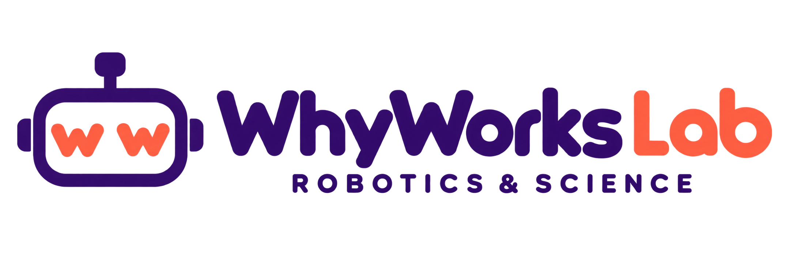
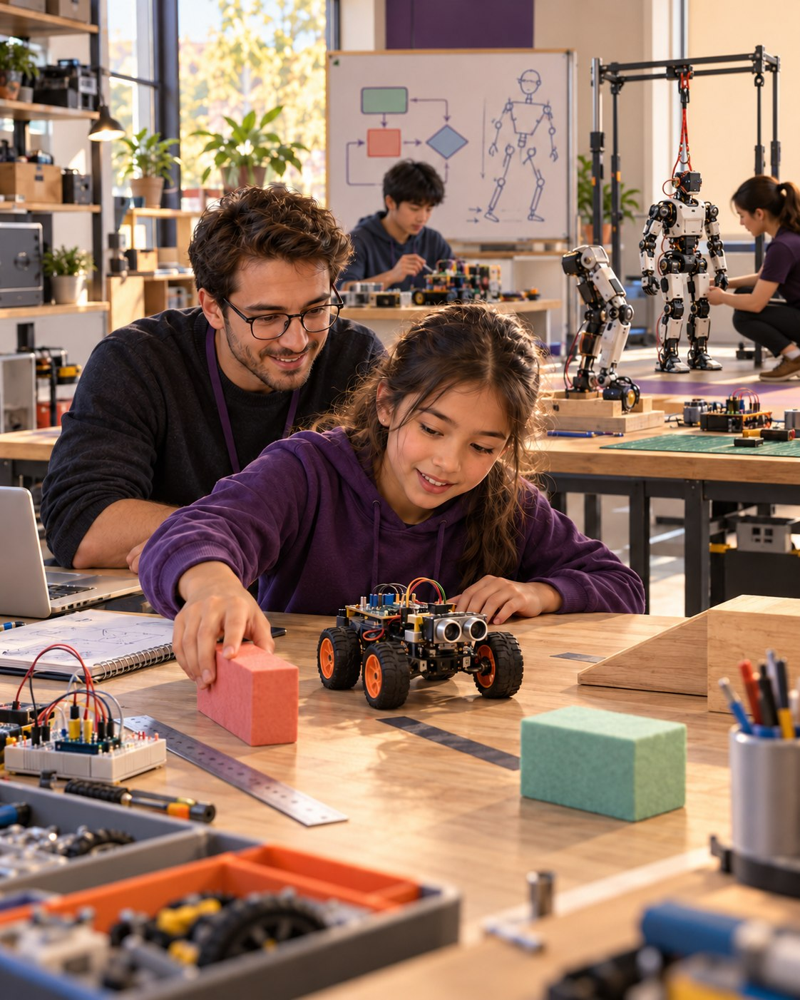

A mystery appears
Learners watch the robot, notice what changed and record what they think will happen next.
Experience + predict
Where do I start?Experience firstExplanation afterEvidence always
Every class begins with a real movement, puzzle, failure or surprising result. Learners predict, test, build and debug before the technical explanation arrives. That same habit grows from first rover experiments to supervised humanoid engineering.
No prior robotics or coding experience is required for Foundation. In-centre and online options are available.

Advanced pathway · readiness-gated
Experience it yourself
This small experiment mirrors the beginning of a WhyWorksLab class: learners commit to an idea, change one variable and examine the evidence before receiving the explanation.
Try it: set the obstacle, choose a prediction, then test it.
Change one thing, make a prediction and let the evidence answer.
Inside a WhyWorks class
Imagine a rover stopping before a box. Instead of explaining the sensor, the teacher moves the box and asks, “What will happen now?” The prediction becomes the beginning of the lesson.
Learners watch the robot, notice what changed and record what they think will happen next.
Experience + predictThey move the obstacle, repeat the run and compare the result—changing one variable at a time.
Investigate + measureOnly after the evidence do we name feedback, revise the rule and ask learners to explain why it now works.
Name + build + explainNot “I followed the steps.”“I can explain what changed, why it changed and what I would test next.”
Two entry categories
Every learner enters through Foundation or an Advanced readiness review. Age helps us adapt the teaching; practical evidence decides Advanced eligibility.
Which entry category should we discuss?
How the programme is organised
A learner begins with Foundation or qualifies for Advanced. Inside Advanced, progression is sequential and decided through practical evidence and safety readiness.
Entry category 01 · Foundation Robotics
Explore mechanisms, circuits, sensors, algorithms, feedback and safe robot design through age-adapted experiments.
Entry category 02 · Advanced Robotics
Eligible learners enter one continuous Advanced programme. WhyWorksLab guides progression only after practical skills, project evidence and safety habits are demonstrated.
Internal Advanced sequence
Progression is determined by WhyWorksLab through practical evidence and safety gates.
Advanced is one continuous programme: its phases are not separately selectable. A 12–18 DOF small humanoid remains an advanced project target—not a guaranteed result of attendance.
Experience needs guardrails
Learners do not simply use hardware. They learn when to stop, inspect, isolate a fault and verify a safer next step. Higher-energy systems begin only after practical readiness checks.
Claims must match evidence. Illustrations teach concepts; approved kit instructions and instructor checks govern real hardware.
Curriculum by entry category
Foundation covers Sessions 1–36. Advanced is one continuous programme across Applied, Competition and Humanoid phases in Sessions 37–120.
Applied, Competition and Humanoid labels below describe internal Advanced phases; they are not separate admission choices.
Questions thoughtful families ask
Call or message us to confirm fees, batch dates and the most suitable class mode.
We begin with something learners can observe or manipulate—not a definition. They predict, test one variable and discuss the result before the instructor introduces the technical concept or code behind it.
No. Admission is only to Foundation or, after an eligibility review, to Advanced. Applied, Competition and Humanoid are sequential phases inside the continuous Advanced programme, with progression decided by practical evidence and safety readiness.
No for Foundation. The course starts with movement, physical command cards, mechanisms and safe experiments before code becomes the tool. Advanced entry requires demonstrated prerequisites and a readiness review.
No. Humanoid Engineering is the final readiness-gated phase inside Advanced. A small 12–18 DOF biped is a project target for appropriately prepared teams, not a guaranteed result of attendance.
No. The method begins with physical phenomena, prediction and hands-on tests. Coding is introduced as one way to control and explain a real system.
Through practical evidence: a prediction, a test or program trace, a revision, a causal explanation and safe teamwork. Foundation includes six readiness milestones and a practical showcase gate.
The curriculum supports age-appropriate classroom kits and a budget-sensitive shared-hardware track. Exact platforms, availability and advanced facilities must be confirmed with the academy.
Yes. WhyWorksLab offers online classes as well as in-centre learning. Hardware or home-kit requirements are confirmed for the learner’s recommended entry category and batch.
The supplied curriculum describes an internal coherence audit, not independent accreditation. Ask the academy directly about any certificate or recognition offered for a specific batch.
Start with a conversation
Tell us the learner’s stage, preferred entry category and class mode. We’ll help confirm whether Foundation or an Advanced readiness review is the suitable starting point.
Visit or join online
In-centre and online classes are available. For online batches, we will confirm any hardware or home-kit requirements before enrolment.
Map pin supplied for the academy location.